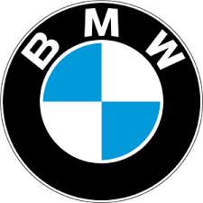

BMW in country
imagine...
Driving Tomorow Today
imagine...
Driving Tomorow Today

BMW presents
FREUDE.FOREVER
Eco freindly enjoyment
Time for Sustainable at Le Jarden de Berne
imagine...
Driving Tomorow Today
imagine...
Driving Tomorow Today
BMW presents
FREUDE.FOREVER
The BMW Podcast: Changing Lanes
"Changing Lanes” is the official podcast of BMW. Featuring new episodes each week, in which our hosts take you on exciting journeys and talk about innovative technologies, lifestyle, design, cars and more. Find and subscribe to Changing Lanes on all major podcasting platforms.
CHASING THE GREENEST CAR Episode 04 | How do we design sustainability?
CHASING THE GREENEST CAR Episode 03 | How can we rethink recycling?
CHASING THE GREENEST CAR Episode 02 | How do we turn production green?
??????????????????????????????????????BMW in your country
ALL BMW MODELS
Find your BMW
CHASING THE GREENEST CAR An audio documentary about sustainability at BMW
BMW XNikita Gale The automobile is always there
Drive and Life with BME Family

The BMW factory first began to manufacture motorcycle engines, then began to manufacture motorcycles in the early years of World War I. The first successful motorcycle of this company after the Helios and Flink model was called R32. This motorcycle had a twin boxer engine in which the ICCE cylinder protruded from each side of the motorcycle. Apart from single models, all motorcycle models made by BMW had a unique look and kept this look until 1980. There are still BMW engines that are made in the same way and they have made their name known with the R series. In the midst of World War II, BMW began to build the R75 motorcycle, which had a place to install it next to the car.
Yen was accompanied by its unique design, which was copied from Zündapp, and its wheels were the same as those of the engine, and its differential was locked on the engine. This made it very strong It was in the early 1990s that BMW started to upgrade its Boxer Airhead model; which then became known as Oilhead. In 2002, Ilhead engines had two spark plugs per cylinder. In 2004, this company added an internal balance shaft to the engine, this increased its capacity to 1170 cc and increased its power to 100 horsepower in the R1200GS model, which is superior to the R1150GS model with 85 horsepower and 1000 cc. had many
Yen was accompanied by its unique design, which was copied from Zündapp, and its wheels were the same as those of the engine, and its differential was locked on the engine. This made it very strong It was in the early 1990s that BMW started to upgrade its Boxer Airhead model; which then became known as Oilhead. In 2002, Ilhead engines had two spark plugs per cylinder. In 2004, this company added an internal balance shaft to the engine, this increased its capacity to 1170 cc and incre
Quick Links
Home BMW in your country EU Detergents REACH Regulation Compatiblity Check Software Update Accessories Update Autonomous Driving Service Page Charging ProductsMore BMW Websites
BMW M BMW Motorsport BMW Golfsport BMW Driving Experience BMW Welt BMW Group Classic BMW Group BMW Group CultureBMW.com
About BMW.com Contact Cookies Cookies Legal Notice / Data protectionVisit us on
Facebook Twitter Instagram YouTube